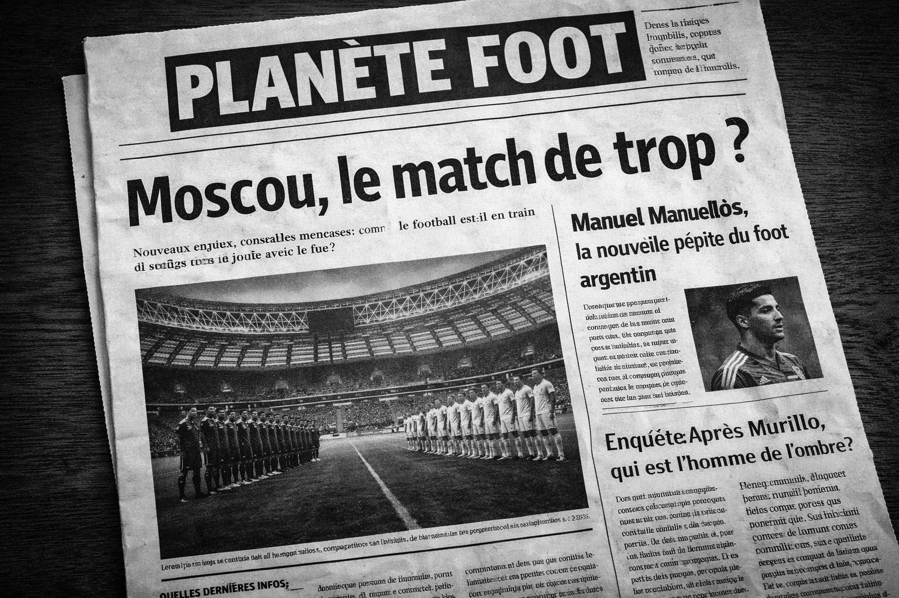
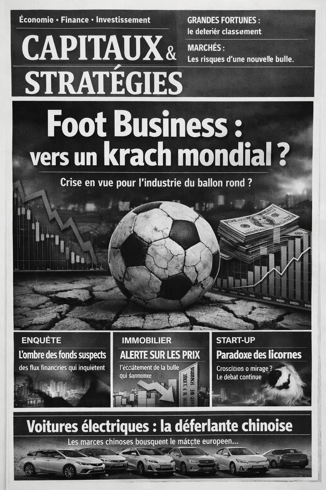
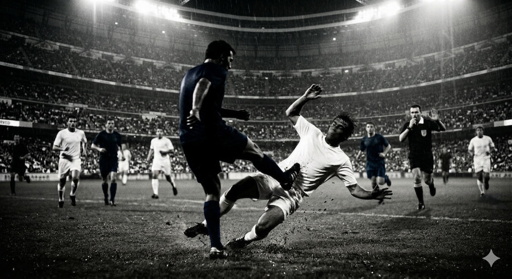
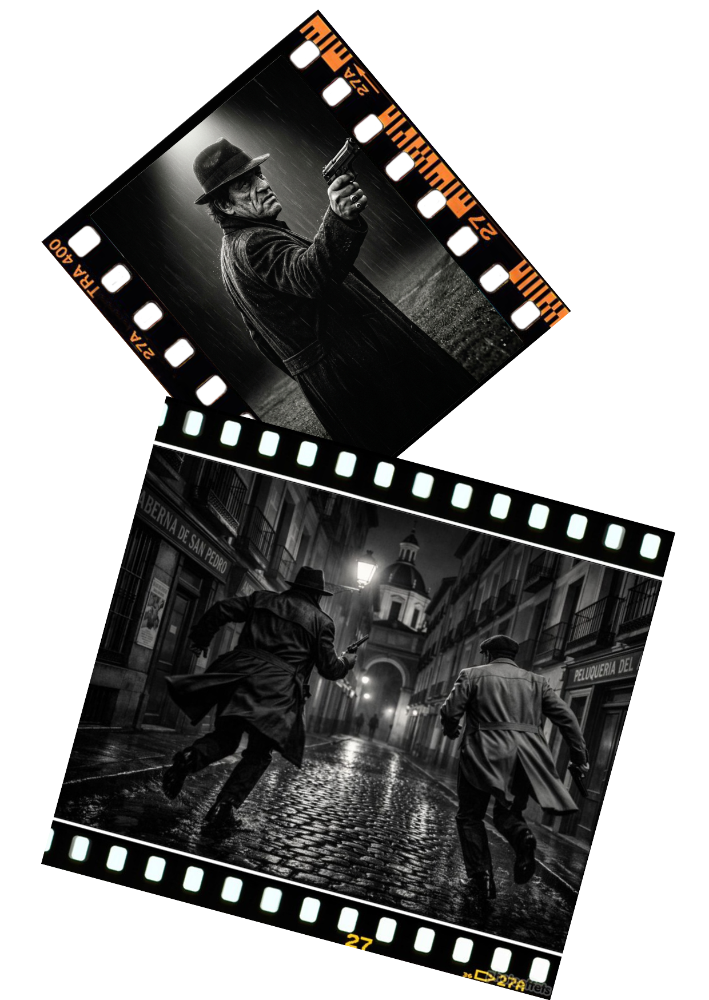

© 2026 - Stéphane Deferraz - Les Éditions du Pangramme
Kévin court. Les battements de son cœur écartent le flot des passants, de leurs ombres et de leurs fantômes, croisés sur les trottoirs gris et brûlants ; ils repoussent cette foule, qu’ils rejettent en deux vagues qui se détachent puis se reforment après le passage de l’homme - l’homme qui va si vite que personne ne le reconnaît.

"Infantino, la planète entière a failli assister à une catastrophe. Certains membres du Conseil de la FUEFA ont reçu des preuves, des images qui, heureusement, ne sont pas publiques. Tu joues à un jeu dangereux."

En un instant, les images, le bruit et les odeurs de l’attaque avaient pris possession de son esprit : légumes et caisses qui éclatent, sifflements et claquements des balles, fades effluves potagères mêlées d’odeurs de sang et de métal...

Sous les huées et les sifflets tombées des gradins, l’équipe visiteuse reprit le contrôle du ballon. Les joueurs russes se faisaient de plus en plus pressants et parvenaient à maintenir leurs adversaires à distance de leur but.

Tu sais pourquoi ce sport est éternel ? Parce que c’est une métaphore de la vie. N’importe quel incident peut changer le sort d’un match : une cheville qui se tord, un tendon qui claque, un rebond saugrenu, une erreur d’appréciation de l’arbitre... Voilà pourquoi je dis que le foot, c’est une métaphore de la vie.
© 2026 - Stéphane Deferraz - Les Éditions du Pangramme